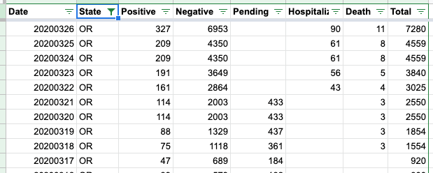

Oregon Data is sometimes incorrect because of timing
Issue number 135
Greg-Boggs opened this issue on March 26, 2020 at 2:08 am
Labels Publish Time stale
It’s happened a couple of times where the API fetches Oregon Data just before the Oregon Health department updates the numbers. So, the API shows the same data for two days in a row. Can we adjust the timing on the Oregon data scrape so that it’s a bit later in the day?
Comments
Reassigning to the API team.
FYI - the API from https://covidtracking.com/api/ is curated by people who make sure the most accurate data we have is available. We have set our cutoff at four for our daily data to create a fixed daily data point. Unfortunately, some states are not very consistent with their updates. We try to accommodate if possible, but there is a limit to how much we can tweak our data.
The best thing you can do is to push your government to improve their reporting process.
This is our daily report: 
And this is our log of data throughout the day:

This issue has been automatically marked as stale because it has not had recent activity. It will be closed if no further activity occurs. Thank you for your contributions!
Alternative, make a request more than once in 24 hours? Is there harm in making a request 12 hours out of phase? Oregon has not consistently updated their data (at the same time of day). For that, what is the harm in making regular (4-6 hour) requests?